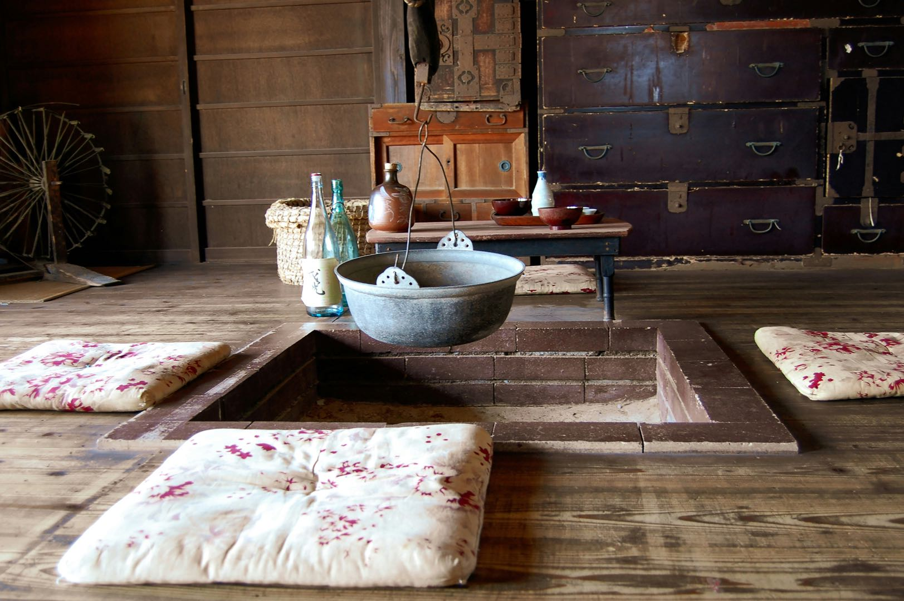

空き家活用
空き家を「貸す」なら知っておきたい契約の種類｜普通借家・定期借家・借り上げの違い
公開日
更新日
読了目安 約3分
執筆：暮らす旅の手帖編集部
監修：石原 佑真

空き家を貸して家賃を得る方法には、普通借家契約、定期借家契約、事業者による借り上げ（サブリース）などがあります。それぞれの違いと、宿として貸す場合に確認したい契約のポイントを解説します。
この記事のポイント
- 普通借家契約は、借主の保護が強く、貸主からの更新拒絶や解約には「正当な事由」が必要です。
- 定期借家契約は、期間が満了すると契約が終了するため、将来自分で使う予定がある場合に向いています。
- 事業者による借り上げでは、空室の有無にかかわらず家賃を受け取れる場合がありますが、条件の確認が欠かせません。
- 宿として貸す場合は、用途・改修の負担・原状回復・中途解約の条件を契約で明確にしておくことが大切です。
主な契約の種類
| 契約の種類 | 特徴 | 向いているケース |
|---|
| 普通借家契約 | 契約期間が満了しても、借主が希望すれば原則として更新される | 長く貸し続けたい |
| 定期借家契約 | 期間が満了すると更新されずに終了する（再契約は可能） | 将来、自分で使う・売る可能性がある |
| 借り上げ（サブリース） | 事業者が借りて、宿などとして運営する | 運営の手間をかけずに家賃を得たい |
普通借家契約の注意点
普通借家契約は、借地借家法によって借主が強く保護されています。貸主から更新を拒んだり、解約を申し入れたりするには、「正当な事由」が必要で、簡単には認められません。
一度貸すと、長期間にわたって自分で使えなくなる可能性があることを理解しておきましょう。
定期借家契約の特徴
定期借家契約は、契約で定めた期間が満了すると、更新されずに終了する契約です。契約を結ぶ際には、書面（電子的な方法も可）による契約と、更新がないことを事前に説明する書面の交付が必要です。
期間が1年以上の場合、貸主は期間満了の1年前から6か月前までの間に、借主に終了の通知をする必要があります。
事業者による借り上げのポイント
宿の運営会社などが空き家を借り上げ、宿として運営する方法では、所有者は運営の手間をかけずに家賃を受け取れるのが特徴です。空室の有無にかかわらず一定の家賃が支払われる契約もあります。
ただし、家賃の見直しの条件、契約期間、中途解約の条件によっては、想定どおりの収入が続かないこともあります。契約前に、条件を十分に確認しましょう。
宿として貸す場合に確認したい契約のポイント
- 用途：宿泊施設として使うことを契約で明記します。
- 改修の負担：誰がどこまで改修し、費用を負担するかを決めます。
- 原状回復：契約終了時に、改修した部分をどう扱うかを決めます。
- 修繕の分担：屋根や構造など大きな修繕と、日常の小さな修繕の分担を決めます。
- 中途解約：どちらから、どのような条件で解約できるかを確認します。
まとめ：将来の使い方から、契約の形を選ぶ
空き家を貸すときは、家賃の額だけでなく、将来その家をどうしたいかから契約の形を選ぶことが大切です。宿として貸す場合は、改修や原状回復の条件も含めて、専門家に相談しながら契約内容を整えましょう。
よくある質問
Q古い空き家でも借りてもらえますか？
A宿として活用する事業者であれば、古い建物の雰囲気をむしろ魅力と考えることがあります。建物の状態や立地によって条件は変わります。
Q改修費は誰が負担しますか？
A契約によって異なります。所有者が負担して家賃を高めに設定する方法や、借主が負担して家賃を抑える方法などがあります。
Q途中で売りたくなった場合はどうなりますか？
A賃貸中の物件として売却することは可能ですが、契約の内容によっては制約があります。将来売却の可能性がある場合は、定期借家契約などを検討しましょう。
参考資料
※ 本記事の数値・制度は公開日時点で公表されている資料にもとづきます。最新の情報は各機関の発表をご確認ください。